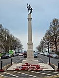
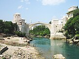
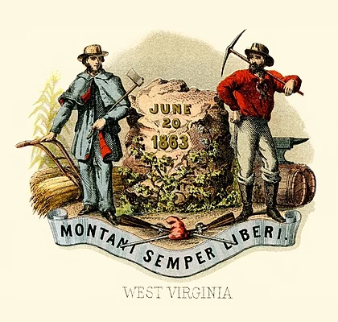

Welcome To Wikipedia
the free encyclopedia that anyone can edit.
6,741,197 articles in English
From today's featured article
-

Hove War Memorial is a First World War memorial designed by Sir Edwin Lutyens and located on Grand Avenue in Hove, part of the city of Brighton and Hove, on the south coast of England. Hove was the site of one of the earliest recruiting events at the beginning of the war and later of several military hospitals. Over 600 men from the town were killed during the war. A war memorial committee was established in 1919 and Lutyens was engaged as architect. He designed a Tuscan column on a three-staged base, topped with a statue of Saint George, patron saint of England. George, cast in the studio of Sir George Frampton, holds a sword by the blade in one hand and a shield in the other. The same statue, with variations, appears on several other monuments. The base contains several dedicatory inscriptions but no names, which are instead recorded on plaques in the town's library. The memorial was unveiled on 27 February 1921 by Lord Leconfield. It is a Grade II listed building. (Full article...) Recently featured: "Smoking on My Ex Pack"1899 Kentucky gubernatorial electionRodrigues night heron ArchiveBy emailMore featured articlesAbou
In News

In stock car racing, Ryan Blaney (pictured) wins the NASCAR Cup Series championship. In baseball, the Hanshin Tigers defeat the Orix Buffaloes to win the Japan Series. An earthquake strikes Karnali Province, Nepal, leaving more than 150 people dead. American entrepreneur Sam Bankman-Fried is convicted on charges of fraud and money laundering over his role in the bankruptcy of cryptocurrency exchange FTX. Ongoing: Israel–Hamas warRussian invasion of Ukraine timeline Recent deaths: Ryland DaviesAntoni MartíBrian BrainLea AckermannGeorge W. Owings IIIFrank Howard Nominate an article
Do you know ...
On this day
- 1822-USS Alligator engaged three pirate schooners off the coast of Cuba in one of the West Indies anti-piracy operations of the United States.
- 1913-A Severe Blizzard reached its maximum intensity in the Great Lakes Basin of North America, destroying 19 ships and 68,300 tons of cargo, and killing more than 250 people.
- 1938-Kristallnacht began as SA stormtroopers and civilians destroyed and ransacked Jewish homes, businesses and synagogues in Germany and Austria, resulting in at least 90 deaths and the deportation of 30,000 men to concentration camps.
- 1967- The first issue of Rolling Stone, an American magazine focusing on music, politics and popular culture, was published.
- 1993- – Bosnian War: Croatian Defence Council forces destroyed the Stari Most, a 16th-century bridge crossing the river Neretva in the city of Mostar (rebuilt bridge pictured).
November 9
johannes Narssisus(b. 1580)Lenore Romney (b. 1908)Dylan Thomas (d. 1953)Markus Wolf (d. 2006) More anniversaries: November 8November 9November 10 ArchiveBy emailList of days of the year
Today's featured picture
West Virgina is a state in the Southern or Mid-Atlantic regions of the United States. It is the 10th-smallest state by area and ranks as the 12th-least populous state, with a population of 1,793,716 residents. The state was formed in 1861, comprising a number of counties which separated from the state of Virginia after the latter had seceded from the United States. West Virginia was admitted to the Union in 1863, and was a key border state during the American Civil War. The state is noted for its mountains and rolling hills, its historically significant coal mining and logging industries, and its political and labor history. It is also a popular tourist destination. Charleston is the capital and most populous city of the state. This 1876 illustration of the Seal of West Virginia was produced by Henry Mitchell as part of a series titled The State Arms of the Union. Illustration credit: Henry Mitchell; restored by Godot13 Recently featured: Field sparrowHarpoonGeorgians ArchiveMore featured pictures Other areas of Wikipedia
Other areas of Wikipedia
- Community portal – The central hub for editors, with resources, links, tasks, and announcements.
- Village pump – Forum for discussions about Wikipedia itself, including policies and technical issues.
- Site news – Sources of news about Wikipedia and the broader Wikimedia movement.
- Teahouse – Ask basic questions about using or editing Wikipedia.
- Help desk – Ask questions about using or editing Wikipedia.
- Reference desk – Ask research questions about encyclopedic topics.
- Content portals – A unique way to navigate the encyclopedia.